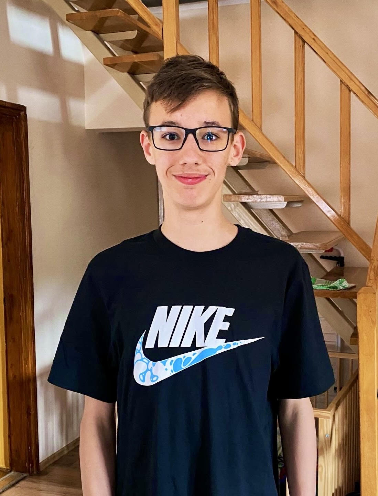

Bemutatkozás
A nevem Kakula Dániel.15 éves vagyok.Bajon lakom. A TSZC Mikes Kelemen Technikum NT9.A osztályba járok,és azt a feladatot kaptam hogy készítsem el ezt a projektweboldalt.Szeretek focizni és videót készíteni,Játszani a gépen és dolgozni is rajta, illetve a családommal kirándulni:).Előző iskolám a Baji Szent István Német Nemzetiségű Általános Iskola volt,ahol németet és angolt tanultam .A kedvenc tantárgyam a testnevelés,biológia és a történelem volt. Óvoda: a Tatai Bartók Béla Óvodába jártam. A szüleimmel minden évbe legalább kétszer megyünk a Balatonra vagy valami strandra nyaralni. A kedvenc ételem a hamburger .A Kedvenc italom pedig a gyömbér illetve a víz.

Görgethető oldal